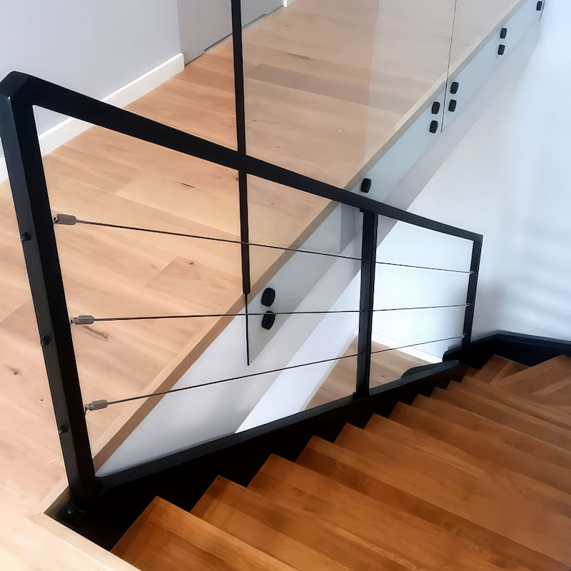

Wybierając schody drewniane z metalową balustradą, diabeł tkwi w szczegółach. To właśnie wykończenie elementów stalowych decyduje o tym, czy schody będą wyglądać surowo i industrialnie, czy elegancko i nowocześnie. Stawiamy na technologie, które gwarantują estetykę bez widocznych spawów i niedociągnięć.


Rodzaje konstrukcji i wypełnień
Nowoczesna balustrada to nie tylko barierka — to przemyślana konstrukcja techniczna. W naszych realizacjach w Katowicach, Chorzowie, Siemianowicach Śląskich i Gliwicach najczęściej stosujemy:
- Profile zamknięte (kwadratowe i prostokątne) — najpopularniejszy wybór do wnętrz typu loft. Standardowo używamy profili o przekroju 40×40 mm lub subtelniejszych 20×20 mm.
- Pręty pełne — okrągłe lub kwadratowe, montowane pionowo lub poziomo. Tworzą ażurową, lekką strukturę, która optycznie powiększa klatkę schodową.
- Wycinanie laserowe (CNC) — dla klientów szukających unikatowości oferujemy wypełnienia z blachy ciętej laserem w dowolne wzory geometryczne lub roślinne.


Technologia wykończenia: malowanie proszkowe
Wszystkie nasze balustrady metalowe poddawane są procesowi malowania proszkowego. Dlaczego to kluczowe?
- Odporność mechaniczna — farba proszkowa jest znacznie twardsza niż tradycyjne lakiery, chroni przed zarysowaniami od biżuterii i uderzeń przy wnoszeniu mebli.
- Idealna gładkość — technologia eliminuje zacieki i pęcherzyki powietrza widoczne przy lakierowaniu pędzlem.
- Paleta RAL — dopasujemy kolor metalu do okuć okiennych, drzwi lub mebli. Największym hitem pozostaje Głęboka Czarna Struktura (RAL 9005) oraz Antracyt (RAL 7016).
Bezpieczeństwo i normy techniczne
Projektując schody na wymiar, rygorystycznie przestrzegamy norm budowlanych:
- Wysokość balustrady — standardowo 90–110 cm mierzone od krawędzi stopnia.
- Rozstaw wypełnienia — planujemy z myślą o bezpieczeństwie dzieci, odstępy nie przekraczają 12 cm.
- Stabilne mocowanie — montaż boczny (do policzka schodów) lub odgórny (do stopnia), z użyciem profesjonalnych kotew chemicznych.
Połączenie drewna z metalem – jak to robimy?
Kluczem do trwałości jest odpowiednie połączenie dwóch różnych materiałów. Stosujemy systemy ukrytego montażu, dzięki którym punkty styku drewna ze stalą są estetyczne i niemal niewidoczne. Specjalne podkładki dylatacyjne zapobiegają skrzypieniu schodów na styku konstrukcji.
Balustrada to nie tylko element bezpieczeństwa — to wizytówka całych schodów. Warto poświęcić czas na wybór detali, bo to właśnie je widać z każdego miejsca w salonie. — Łukasz Kleszcz, stolarz z ponad 20-letnim doświadczeniem
Efekt końcowy
